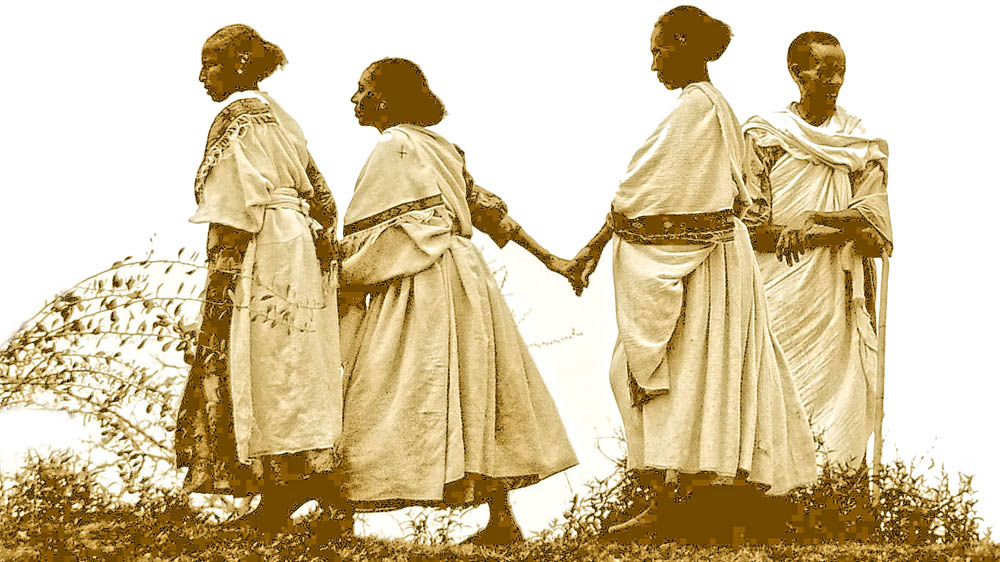
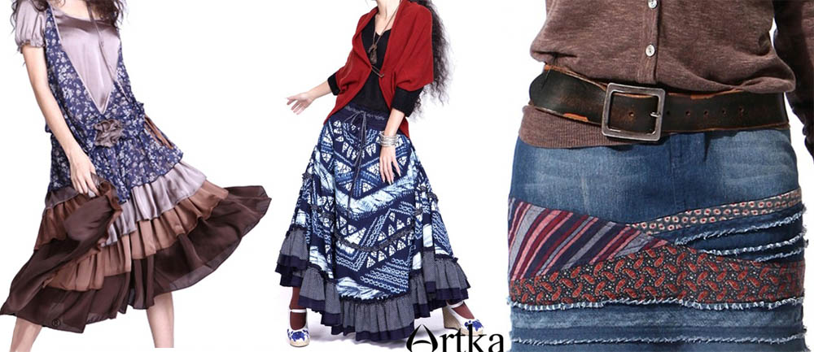

Перспективы ИЗРАИЛЬСКОЙ МОДЫ
...нужно отринуть чопорность европейских традиций костюма и посмотреть внимательно на исторический костюм, на национальные костюмы всех людей, населяющих Эрец Исраэль.
Автор: Леся Репетивская

.
Перспективы израильской моды.
Прогноз от Леси Репетивской
Все фото заимствованы и приведены для примера.
Я думаю, что сейчас идет становление израильской моды. Самым простым вариантом является перенос европейских традиций сюда на израильскую землю. И это в корне не правильно. Никогда в тропическом климате не приживется платье-футляр, – жарко, не практично и нигде не требуется дресс-код.
Платье - футляр


Изображение древних евреев
Мне кажется, нужно отринуть чопорность европейских традиций костюма и посмотреть внимательно на исторический костюм, на национальные костюмы всех людей, населяющих Эрец Исраэль, отпустить на волю свою фантазию, и ни в коем случае не ограничивать себя черно-белым, не притягивать в свою жизнь некие предубеждения.

Костюмы евреек стран Магриба, йеменский еврей нач. 20-го века

Украшения йеменских евреев
Мне кажется, что пришло время родиться на свет Божий именно тропическому виду одежды – удобному, практичному, очень яркому, красивому, который будет полностью соответствовать красоте святого места - Израиля, - земли, где мы живем, чтобы не терялось платье на фоне цветущих деревьев, чтобы женщина выглядела достойно в этом божественном окружении.
Идя по улицам видно, откуда приехал тот или иной человек. И самое печальное, что мои соотечественницы меньше всего привнесли в самобытность израильского костюма чего-то своего. Привезли синтетические ткани, которые не нужны здесь. Они не практичные и не носятся. Мешает некая надменность европейского менталитета, который никак не хочет принять, что Восток – сегодня его родина.
Путь из внутреннего рабства, в котором, - увы, пребывают многие эмигрантки, по многим причинам проходит через то, чтобы посмотреть на себя совершенно другими глазами – увидеть себя, как любимую дочь Божью, как наследницу, как царицу и, наконец, упаковать себя не в брутальные лосины, а в красивую достойную одежду.

Бохо-шик стиль
Мне очень приятно, что стиль бохо докатился до Израиля. Одно из ответвлений бохо – этно-бохо, т.е. национальный костюм. И мне кажется в Израиле этот стиль имеет достаточно большие перспективы. Многонациональность этой страны (на иврите есть выражение «кибуц галуйот» - буквально `собирание изгнаний`, то есть возвращение изгнанных, воссоединение всех евреев в Эрец-Исраэль из всех стран рассеяния) подразумевает смешивание культур, и в этом водовороте культур может возникнуть нечто действительно потрясающее.



Бохо-стиль
Модели одежд общины эфиопских евреев
Стоит обратить внимание и присмотреться, например, к костюму эфиопских евреев. Он немного подвержен уничижению. И очень зря. Именно в национальном костюме может родиться новая культура. Иногда, то как комбинируют эти дамы совершенно друг к другу не подходящие вещи, не уступает подиумам Парижа. Смелость, с которой они это делают, граничит с искусством. У них сохранилась национальная традиция, особенный, присущий им подход.
Мне очень хочется и нравится ходить здесь в Израиле в длинных юбках. Хочется вернуться в те времена, когда женский костюм придавал некую беззащитность. Я люблю брюки – это практично, но мне кажется, время их потихоньку уходит. Это мой сторонний взгляд :).